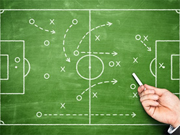

Lleva a tu equipo al siguiente nivel
sportstats surge como una opción para que entrenadores amateur que quieren analizar de forma más profunda los resultados de sus equipos para actuar sobre los puntos débiles y mejorar así el rendimiento de los mismos. Aquí podrás ver de forma precisa cuáles son las áreas a mejorar de cada jugador y en general de tus equipos.


Analiza a tu equipo
A través de la aplicación podrás ver gráficas autogeneradas que muestran con claridad el estado actual de tus jugadores y equipo. Introduce los datos de tus partidos y la aplicación te proporcionará gráficos detallados.